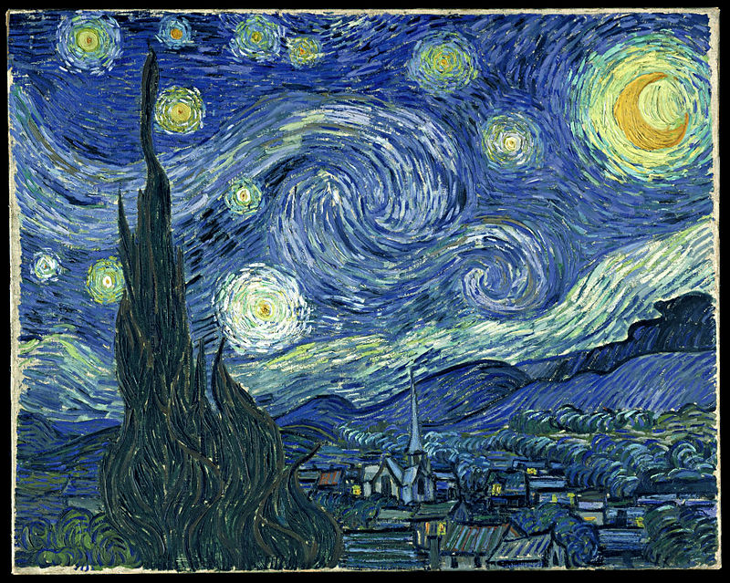
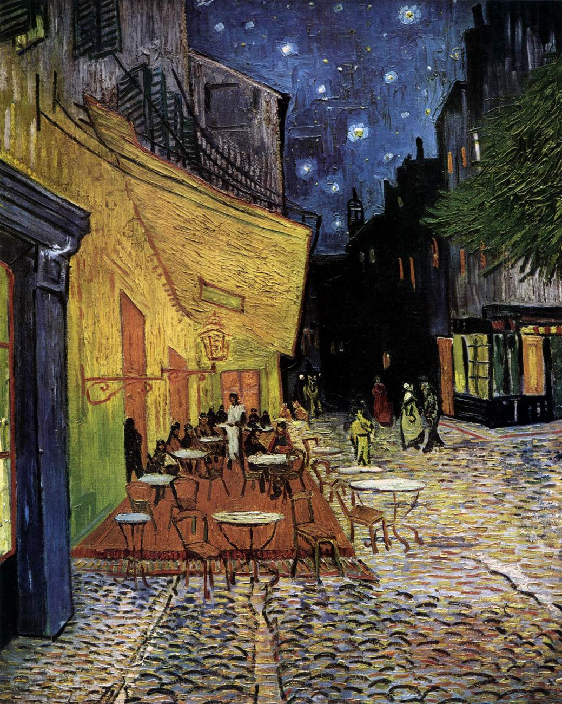
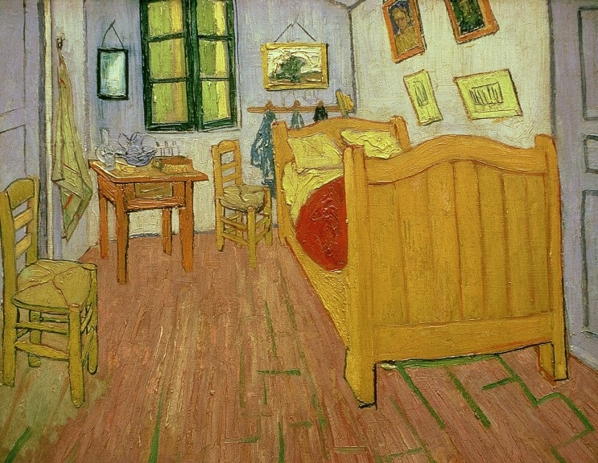

《별이 빛나는 밤》은 네덜란드의 화가 빈센트 반 고흐의 가장 널리 알려진 작품이다. 정신병을 앓고 있을 당시의 고흐가 그린 작품이다. 1889년 상 레미의 정신병원에서 그린 그림으로써, 당시 고흐는 정신장애로 인한 고통을 그림 속의 소용돌이로 묘사했다.
빈센트 반 고흐의 대표작 중 하나로 꼽히는 《별이 빛나는 밤》은 그가 고갱과 다툰 뒤 자신의 귀를 자른 사건 이후 생레미의 요양원에 있을 때 그린 것이다. 고흐에게 밤하늘은 무한함을 표현하는 대상이었고, 이보다 먼저 제작된 아를의 《밤의 카페 테라스》나 《론 강 위로 별이 빛나는 밤》에서도 별이 반짝이는 밤의 정경을 다루었다. 고흐 자신은 《별이 빛나는 밤》의 작업을 마쳤을 때 그다지 좋게 생각하지 않았다고 한다. 작품이 소개될 당시 미술계의 반응도 변변찮았다. 하지만 이 그림은 1941년부터 뉴욕 현대미술관(MOMA)에서 상설 작품으로 전시되었다.


<아를르 포룸 광장의 카페테라스>가 그려진 시기는 반 고흐가 가장 활발하게 작품활동을 했던 시기로 바라보는 사물과 장면을 자신만의 강한 색채감과 붓 터치로 표현했다.
밤의 야외 풍경과 사람들을 담은 이 작품은 실제로 반 고흐가 자주 찾던 카페 드 라 가르의
풍경을 담은 것이라는 이야기가 전해진다.
이 무렵 고흐는 주로 밤에 작업을 하며 밤 풍경을 담았다. 밤을 어둡게만 바라보지 않은 작가의 밤을 대하는 심상이 연결되는 것이라 볼 수 있다. 고흐는 푸른 밤 노란 가스 등이 밝혀진 카페의 광경을 보며 어두운 밤을 어둡되 어둡지 않은 표현 기법을 사용하여 짙은 보랏빛 밤하늘을 표현했다.
고흐는 자신의 감정을 주관적이고 독특하게 표현했다. 두껍고 거친 듯하지만 섬세한 빛의 표현과 생동감 있는 카페의 사람들 모습을 주변 경관과 함께 .... 강한 점 하나 하나의 조합으로 아름답고 포근한 밤 하늘을 표현했다.

파리에서의 실패로 낙담한 빈센트 반 고흐는 1888년 2월에 프랑스 남부 프로방스로 떠난다. 그는 여기에서 화가 공동체를 설립하고자 ‘노란 집’을 빌렸고, 고갱을 초대했다. ....
반 고흐는 이 그림을 그리면서 두껍고 거칠게 발린 강렬한 색채의 대비에 중점을 두었고, ‘창백한 라일락색’의 벽과 ‘신선한 노란 버터처럼 노란’ 침대의 나무 부분과 의자,
‘희미한 라임색’ 시트와 베개, ‘진홍색’ 담요, ‘오렌지색’ 세면대와 ‘파란색’ 세숫대야처럼 보색 대비를 두드러지게 사용했다. 원근법도 정확하게 적용되지 않아 사물들이 약간 위로 솟아오르는 것처럼 보인다. 모서리도 약간 비뚤어져 있는데, 실제로 그의 방은 <노란 집>에서 볼 수 있듯 왼쪽 벽이 둔각인 사다리꼴 형태다. 반 고흐는 의도적으로 이렇게 작업했는데, 테오에게 보낸 편지에서 그는 “단순하게 하여 색채가 사물들에 더 많은 스타일을 부여할 수 있다.”고 설명했다.
빈센트 반고흐